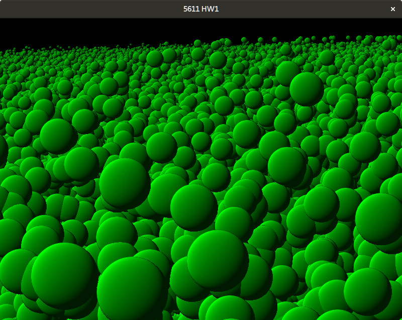

Particle Systems
Group Members
- Liam Tyler
- Bridger Herman
Description
The goal of this assignment was to create a particle system to help with the following four simulations: A ball bouncing on a floor, a water fountain, a fire, and fireworks. We did those, as well as a smoke simulation.
Difficulties
We had about four main difficulties during the course of this project. The first was getting the balls to be normal mapped, and calculating where the depth of the fragment should be. Next was having transparent particles and blending them properly in order. This was a pain, because only some of the particles had to be sorted, some needed different blending modes, and the drawing order mattered. After that we had many bugs with the emitters. Lastly, getting all of the different types of particles to be on the screen simultaneously was difficult because we had to redo a lot of our structure. Overall it was a challenging project, most of it not related to the actual particle system, but how to draw it.
Code
Link to GithubSimulations
- Bouncing Ball
- Water
- Fire
- Smoke
- Fireworks
Features
- 3D implementation
- 3D user controlled camera
- Particle-Obstacle Interactions (arbitrary planes and spheres)
- Textured sprites for particles (besides balls)
- Translucent particles
- Benchmarks 1 - 4: Can have over 100k particles with 30+ FPS
- Thread parallel implementation (see below for performance details)
- Billboarding used for the particles
- Normal mapping and diffuse lighting for the balls to make them look like real spheres
- Point, disc, hemisphere, and sphere emitters
Controls
- W,A,S,D: Move the camera forward, backwards, left, and right
- Mouse: Rotate the camera
- P: Pause the simulation
- Space: Emit particles from currently selected emitter
- F: Launch Firework
- 1 - 5: Select specific emitter
- Arrow Keys: Move the Sphere forward, backwards, left, and right
Tools Used
- OpenGL for the rendering
- SDL2 for the window management and user interaction
- GLM for the vectors and matrices
- OpenMP for parallelizing the particle updating
Implementation Details
Our system in general worked as following every frame:
- Update the particles on the CPU. This would be updating the particle's position, velocity, age, and any other relevant data. Delete the old (dead) particles in this stage.
- Stream the data that is relevant for drawing the particles to the GPU.
- Draw the particles.
To further describe each simulation:
Bouncing Balls: All of our particles are billboarded quads. To make the quads seem like actual spheres though, we used normal mapping to get the correct lighting for each fragment. We also recalcuated the depth of the fragments so that intersecting spheres look correct. These are fully opaque, and rendered first.
Water: For water, and all of the following particles, we used textured billboards. For water we used the same texture as the smoke, but used the particle's color (a light blue) to differentiate them. The blending we did was regular blending with the current color * alpha + new color * (1 - alpha). We sorted these particles, and rendered them last.
Fire: Fire was interesting. We used a fire texture, and used the particle's age to look up its color in a color map which went from white-yellow, to red-black. We also used additive blending, to get the center of our fire to be 'white hot'. We also gave each fire particle a random rotation, and all fire shrinks and fades out of existance as it nears the end of its life. We rendered these after after the opaque objects, without sorting, but without writing to the depth buffer.
Smoke: Very similar to water, except that the color was grey. Each smoke particle also gets bigger and faded as it gets older, so simulate smoke dispersing. Sorted and rendered with water.
Fireworks: We created another particle which we called 'sparkle'. It uses a different texture, and its color changes over time. A firework object goes upwards, emitting a trail of sparkles and smoke until it detonates. Then two spheres of different colored sparkles are emitted, as well as smoke. These sparkles pop in luminosity initially, and then flicker throughout their life. They don't really fade out like smoke or fire does. We sort and render these with water.
We also implemented several other features:
Game Objects: In order to make testing the particle systems easier, we created Game Object primitives which can interact with the particles. The two types of game objects we created were spheres and planes
Collisions: We have two modes of collisions. The first is naive, and only checks for collisions on the ground plane. The second is much slower, but linearly checks for collisions with artibrary game objects, and has friction with the collided object. Sphere collisions use a simple check to see if particles are within the sphere's radius. Plane collisions are slightly more complicated, and use an adaptation of the Möller-Trumbore intersection algorithm for triangles.
Textured Quads: As mentioned previously, every particle is a textured quad. A sample of the some of the textures used can be found below. All textures except the normal map and colormap were created by the authors using GIMP.
Textures:
Fire texture
Smoke and water texture
Firework sparkle texture
Normal map texture
Fire color map
Thread Parallel Performance
We later used OpenMP to help with the updating of the particles. To do this however, we had to change our implementation. If a particle's age is past its lifetime, we delete it bu just moving the last particle in the array into the now dead particle's spot. The problem with this, is that it cannot be done in parallel. So with OpenMP we switched it so that when a particle should be deleted, it adds the particle to a locked list, but does not delete it yet. After the updates, the deleting is done with one thread. Here were our results:

We were initially confused as to why we got no performance benefit. We figured out that it is due to two reasons: Caching, and the locked array. The locked array is obviously going to slow it down a little, but there aren't that many deletes per frame, so it doesn't explain everything. The rest is explained by our particle class having many attributes, so each particle is ~90 bytes. If we try to have hundreds of thousands of particles, we end up having a huge array. This means a lot of cache misses using multiple threads, and if we have not that many particles, it hardly matters whether you have parallelization or not. If we had used the 'struct of arrays' approach, instead of our 'array of structs', we would probably see improvement here.
Benchmarks
Since we had two collision methods as described above, we benchmarked each simulation except for fireworks with both collision methods. For each simulation, we recorded how many particles (actively emitting) we could reach before dropping below 30 FPS. Here are the results:
As you can see, the non-naive collisions are much slower. In general, the balls and fire are much faster as well, most likely because they don't have to be sorted. Even though the FPS drops down to ~20 with one million particles, we thought it was cool, so here are two images of that:
Videos
Images:
All particle systems (except fireworks) emitting at once
A zoom in on the water fountain
Zoomed out picture of fire wrapping around a ball
Close view of the smoke emitter
Zoomed in picture of a firework. There is an outer sphere of purple sparkles, and inner sphere of yellow sparkles, and smoke
View of a detonating firework with several other ones launching
A zoom in on the normal mapped balls